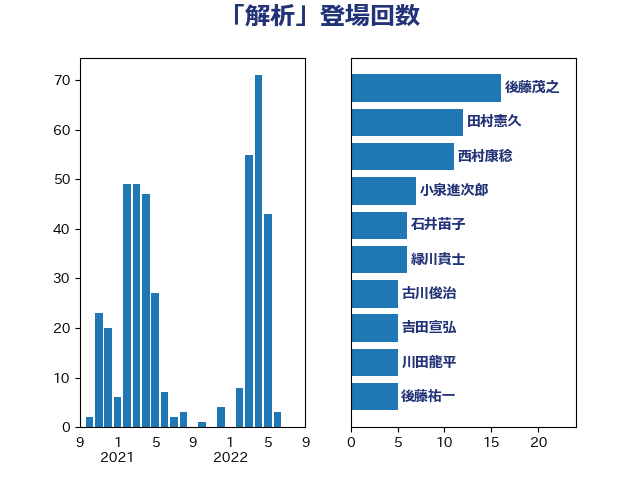

単語「解析」

| 後藤茂之 | 自由民主党 | 16 回 |
| 田村憲久 | 自由民主党 | 12 回 |
| 西村康稔 | 自由民主党 | 11 回 |
| 小泉進次郎 | 自由民主党 | 7 回 |
| 石井苗子 | 日本維新の会 | 6 回 |
| 緑川貴士 | 立憲民主党 | 6 回 |
| 古川俊治 | 自由民主党 | 5 回 |
| 吉田宣弘 | 公明党 | 5 回 |
| 川田龍平 | 立憲民主党 | 5 回 |
| 後藤祐一 | 立憲民主党 | 5 回 |
| 中島克仁 | 立憲民主党 | 4 回 |
| 伊藤孝恵 | 国民民主党 | 4 回 |
| 田村まみ | 国民民主党 | 4 回 |
| 米山隆一 | 立憲民主党 | 4 回 |
| 菅義偉 | 自由民主党 | 4 回 |
| 山下芳生 | 日本共産党 | 3 回 |
| 岸田文雄 | 自由民主党 | 3 回 |
| 斉藤鉄夫 | 公明党 | 3 回 |
| 中山展宏 | 自由民主党 | 2 回 |
| 伊藤俊輔 | 立憲民主党 | 2 回 |
| 佐々木紀 | 自由民主党 | 2 回 |
| 加藤勝信 | 自由民主党 | 2 回 |
| 加藤鮎子 | 自由民主党 | 2 回 |
| 吉田統彦 | 立憲民主党 | 2 回 |
| 大島敦 | 立憲民主党 | 2 回 |
| 宮内秀樹 | 自由民主党 | 2 回 |
| 小川淳也 | 立憲民主党 | 2 回 |
| 小林鷹之 | 自由民主党 | 2 回 |
| 山崎誠 | 立憲民主党 | 2 回 |
| 平木大作 | 公明党 | 2 回 |
| 柴田巧 | 日本維新の会 | 2 回 |
| 橋本岳 | 自由民主党 | 2 回 |
| 熊野正士 | 公明党 | 2 回 |
| 福島みずほ | 社会民主党 | 2 回 |
| 美延映夫 | 日本維新の会 | 2 回 |
| 赤羽一嘉 | 公明党 | 2 回 |
| 野上浩太郎 | 自由民主党 | 2 回 |
| こやり隆史 | 自由民主党 | 1 回 |
| 世耕弘成 | 自由民主党 | 1 回 |
| 中西祐介 | 自由民主党 | 1 回 |
| 井上信治 | 自由民主党 | 1 回 |
| 井林辰憲 | 自由民主党 | 1 回 |
| 吉川ゆうみ | 自由民主党 | 1 回 |
| 吉川元 | 立憲民主党 | 1 回 |
| 吉田とも代 | 日本維新の会 | 1 回 |
| 坂本哲志 | 自由民主党 | 1 回 |
| 堀場幸子 | 日本維新の会 | 1 回 |
| 塩崎彰久 | 自由民主党 | 1 回 |
| 塩村あやか | 立憲民主党 | 1 回 |
| 塩田博昭 | 公明党 | 1 回 |
| 大塚耕平 | 国民民主党 | 1 回 |
| 宮本徹 | 日本共産党 | 1 回 |
| 小池晃 | 日本共産党 | 1 回 |
| 小野泰輔 | 日本維新の会 | 1 回 |
| 山口那津男 | 公明党 | 1 回 |
| 山岸一生 | 立憲民主党 | 1 回 |
| 山崎正恭 | 公明党 | 1 回 |
| 山添拓 | 日本共産党 | 1 回 |
| 山田宏 | 自由民主党 | 1 回 |
| 山田賢司 | 自由民主党 | 1 回 |
| 岡本あき子 | 立憲民主党 | 1 回 |
| 岡本三成 | 公明党 | 1 回 |
| 平井卓也 | 自由民主党 | 1 回 |
| 平将明 | 自由民主党 | 1 回 |
| 平山佐知子 | 無所属 | 1 回 |
| 徳永エリ | 立憲民主党 | 1 回 |
| 朝日健太郎 | 自由民主党 | 1 回 |
| 枝野幸男 | 立憲民主党 | 1 回 |
| 梅村聡 | 日本維新の会 | 1 回 |
| 梶山弘志 | 自由民主党 | 1 回 |
| 比嘉奈津美 | 自由民主党 | 1 回 |
| 江田憲司 | 立憲民主党 | 1 回 |
| 浅野哲 | 国民民主党 | 1 回 |
| 熊谷裕人 | 立憲民主党 | 1 回 |
| 玉木雄一郎 | 国民民主党 | 1 回 |
| 田中健 | 国民民主党 | 1 回 |
| 田中英之 | 自由民主党 | 1 回 |
| 田村智子 | 日本共産党 | 1 回 |
| 石垣のりこ | 立憲民主党 | 1 回 |
| 穀田恵二 | 日本共産党 | 1 回 |
| 芳賀道也 | 国民民主党 | 1 回 |
| 若松謙維 | 公明党 | 1 回 |
| 葉梨康弘 | 自由民主党 | 1 回 |
| 藤田文武 | 日本維新の会 | 1 回 |
| 西村智奈美 | 立憲民主党 | 1 回 |
| 西野太亮 | 自由民主党 | 1 回 |
| 足立康史 | 日本維新の会 | 1 回 |
| 輿水恵一 | 公明党 | 1 回 |
| 野田聖子 | 自由民主党 | 1 回 |
| 長浜博行 | 無所属 | 1 回 |
| 須藤元気 | 無所属 | 1 回 |
| 高木かおり | 日本維新の会 | 1 回 |
| 高木啓 | 自由民主党 | 1 回 |
| 高橋はるみ | 自由民主党 | 1 回 |
| 高階恵美子 | 自由民主党 | 1 回 |